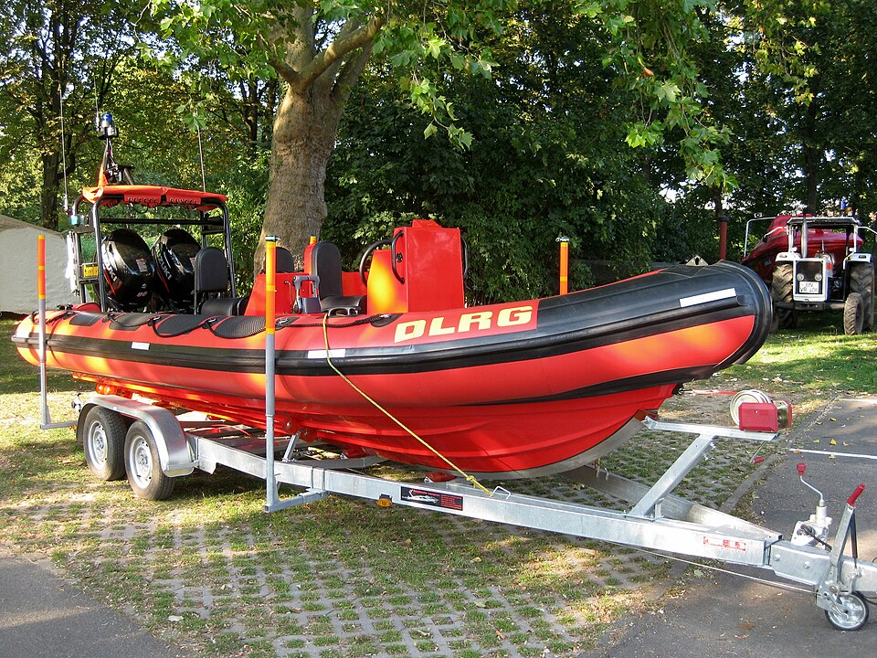
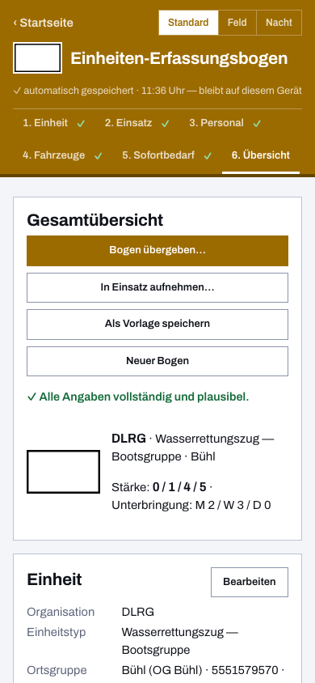

Einheiten-Erfassungsbogen für die DLRG
Hochwasser, Deichverteidigung, Absicherung einer Großveranstaltung: Wenn DLRG-Einheiten überörtlich ausrücken, braucht die anfordernde Führungsstelle eine klare Meldung — wer kommt, mit welcher Stärke, mit welchen Fahrzeugen und Booten, was wird gebraucht. Dieser digitale Einheiten-Erfassungsbogen ist das kostenlose Online-Tool dafür, gebaut für Einsatzstellen, an denen es weder Steckdose noch stabiles Netz gibt.

Sieben fertige Beispielbögen: Wasserrettungszug und -verband
In der App liegen sieben Beispielbögen für DLRG-Einheiten bei. Sie folgen dem „Stärke- und Ausstattungsnachweis (STAN) der Wasserrettungszüge und -verbände“ der Koordinierungsstelle Wasserrettung Baden-Württemberg (Stand 10/2023): je Teileinheit ein eigener Bogen, so wie auch gemeldet wird. Modelliert ist ein Wasserrettungszug im Bezirk Mittelbaden, dessen Teileinheiten von verschiedenen Ortsgruppen gestellt werden, dazu die beiden Führungstrupps des Wasserrettungsverbandes.
| Teileinheit | Stärke | Fahrzeuge im Bogen |
|---|---|---|
| Führungstrupp (Zug) | 1/1/2/4 | KdoW |
| Strömungsrettergruppe | 0/1/7/8 | SrGrFzg, Raft-Anhänger |
| Bootsgruppe | 0/1/4/5 | Bootsgerätewagen, HWB-Anhänger |
| Tauchgruppe | 0/1/5/6 | GW-Wasserrettung |
| Logistiktrupp | 0/1/3/4 | GW-Logistik |
| Führungstrupp (Verband) | 2/1/1/4 | ELW 1 |
| Verbandsführung | 1/1/2/4 | KdoW |
Ein Klick lädt den Bogen, danach passt du nur an, was bei deiner Gliederung abweicht: Ortsgruppe, Funkrufnamen, tatsächliche Besetzung. Den angepassten Bogen speicherst du als eigene Vorlage, sodass deine nächste Meldung in Minuten steht. Auch die Katastrophenschutz-Aufstellungen mehrerer Bundesländer, in denen die DLRG Wasserrettungseinheiten stellt, sind als Landesvorlagen enthalten.
Ortsgruppe, Bezirk, Landesverband — die DLRG-Gliederung ist hinterlegt
Wählst du im Bogen die DLRG als Organisation, bietet die App die Hierarchie-Ebenen der DLRG an: Ortsgruppe, Bezirk beziehungsweise Kreisgruppe und Landesverband. Du trägst also nicht in ein Feuerwehr-Formular hilfsweise deine Ortsgruppe ein, sondern meldest in deinen eigenen Begriffen — und die empfangende Stelle sieht, aus welcher Ebene die Einheit kommt. Für Einheiten des Wasserrettungsverbandes lässt sich die Koordinierungsstelle als weitere Ebene ergänzen.
Beim Funkrufnamen ist das Kennwort „Pelikan“ hinterlegt. Die Kennzahlen dahinter bleiben frei eintragbar: Anders als das THW mit seiner Taschenkarte hat die DLRG kein bundesweit einheitliches Kennzahlenschema, deshalb gibt die App hier nichts vor, was in deinem Landesverband anders geregelt sein könnte.
Stärkemeldung und Sofortbedarf
Gezählt wird in der gewohnten Form Führer / Unterführer / Mannschaft / Gesamt. Fahrzeuge erfasst du mit Funkrufname und Kennzeichen, der Sofortbedarf — Verpflegung, Unterkunft, Kraftstoff, Material — hat seinen festen Platz auf dem Bogen. Das PDF folgt dem gewohnten Papier-Layout; alle Felder zeigt die Übersicht über Vorlage und Aufbau.
Am Wasser gibt es kein WLAN — braucht es auch nicht
Die App arbeitet nach dem ersten Aufruf vollständig offline, als installierbare Web-App auch auf deinem Diensthandy. Übergeben wird der Bogen per QR-Code: Er enthält den kompletten Inhalt, nicht bloß einen Link — die Gegenstelle scannt ihn und hat die Meldung im Gerät, ohne Verbindung zwischen den Geräten. Wie ein Meldekopf daraus die Übersicht über alle eingetroffenen Einheiten baut, steht auf der eigenen Seite dazu.


Häufige Fragen aus der DLRG
Kostet die App etwas oder braucht sie ein Konto?
Nein und nein. Sie ist freie Software unter der EUPL-1.2, ohne Werbung und ohne Registrierung; der Quellcode liegt offen auf GitHub.
Wo bleiben die Daten der Helferinnen und Helfer?
Auf deinem Gerät. Es gibt keinen Server und keine Cloud; weitergegeben wird nur, was du selbst als PDF, Datei oder QR-Code übergibst (Datenschutzerklärung).
Funktioniert die Übergabe auch an andere Organisationen?
Ja. Der Bogen ist BOS-übergreifend — ein Meldekopf der Feuerwehr oder des THW liest den QR-Code einer DLRG-Einheit genauso ein wie den der eigenen Organisation. Genau dafür ist das Werkzeug gemacht.